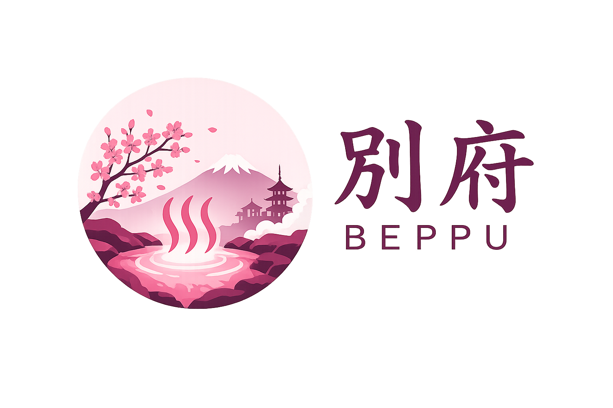

Localizada na província de Ōita, a cidade de Beppu é conhecida por todo o país devido seus famosos onsens (Fontes de Banho Termais). Cercada por montanhas de um lado e praia do outro,
Fontes termais para relaxamento e saúde
Cidade mais famosa do Japão por seus onsens
Culinária no vapor das águas termais
Tradições e estilo de vida
Pontos e experiências únicas
Beppu oferece muito mais do que turismo: é uma vivência cultural profunda ligada ao bem-estar, tradição e natureza.
Respeito, disciplina e harmonia fazem parte do dia a dia japonês.
Águas termais com propriedades relaxantes e terapêuticas.
Explore paisagens, fontes termais e cultura local.
Alimentos cozidos naturalmente com vapor vulcânico.
Descubra a cultura japonesa de forma imersiva